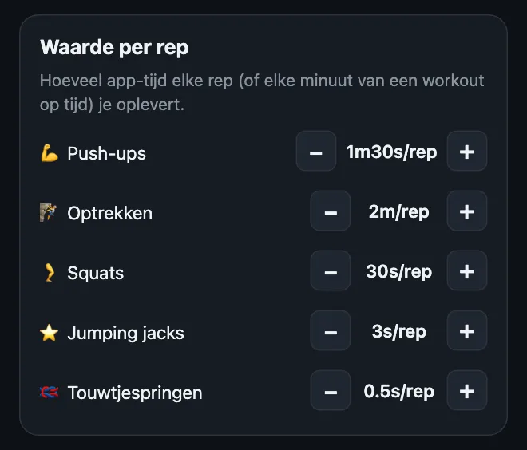

Hoeveel schermtijd moet een push-up waard zijn?
Hoi allemaal! In HonorFit koopt elke rep die je logt app-tijd, en jij bepaalt de prijs. Dat is de vraag die ik het vaakst krijg als mensen de app hebben ingesteld: hoeveel moet een push-up waard zijn? Een minuut? Tien seconden? Zo kijk ik ertegenaan.
De standaardwaarden
Als je nergens aankomt, krijg je dit:
| Oefening | Levert standaard op |
|---|---|
| 💪 Push-ups | 1 minuut per rep |
| 🧗 Optrekken | 1m30s per rep |
| 🔥 Sit-ups, 🦵 Squats | 30 seconden per rep |
| Elke oefening die je toevoegt | 30 seconden per rep |
| Workouts op tijd (wandelen, yoga, HIIT) | 30 seconden per minuut |
| Workouts op afstand | 5 minuten per km, of 8 per mijl |
| 👟 Stappen | 3 minuten per 1.000 stappen |
20 push-ups zijn dus 20 minuten Instagram. Voor veel mensen is dat om te beginnen ongeveer goed. Voor anderen is het veel te gul of veel te krenterig. Bij wie hoor jij?
Kiezen in één regel
Denk aan twee getallen:
- Hoeveel tijd in je geblokkeerde apps voelt op een gewone dag oké? Wees eerlijk, niet ambitieus.
- Hoeveel reps zou je daar echt voor doen, verspreid over de dag?
Deel ze dan: waarde per rep = tijd ÷ reps. Wil je een uur TikTok voor 60 push-ups? 1 minuut per rep. Wil je datzelfde uur, maar draai je je hand niet om voor 120 squats? 30 seconden per squat. Meer is het echt niet.
Is het antwoord op vraag 2 ‘niet zoveel’? Ook prima. Geef je reps een hoge prijs, en gebruik een dagelijkse basis (Instellingen, gratis) zodat elke dag begint met al wat tijd op je saldo.
Een paar setups om over te nemen
| Oefening | Elke rep levert op | Wat een set je oplevert |
|---|---|---|
| Push-ups (beginner) | 1m30s | 10 push-ups = 15 minuten |
| Push-ups (je doet dit al een tijdje) | 30 seconden | 40 push-ups = 20 minuten |
| Jumping jacks | 3 seconden | 100 jumping jacks = 5 minuten |
| Touwtjespringen (per sprong) | 0,5 seconde | 600 sprongen = 5 minuten |
| Optrekken | 2 minuten | 5 keer optrekken = 10 minuten |
| Hardlopen (afstand) | 6 minuten per km | 5 km = 30 minuten |
Het patroon: hoe makkelijker en sneller een rep is, hoe minder hij waard moet zijn. Een jumping jack duurt ongeveer een seconde, dus die moet niet evenveel opleveren als een keer optrekken.
De stappen zijn fijner geworden in 1.18.0
Tot voor kort was de kleinste waarde 5 seconden. Daardoor waren supersnelle reps (touwtjespringen, jumping jacks) lastig te prijzen, en van 3 naar 10 minuten gaan duurde eindeloos. Een gebruiker mailde me over allebei, dus in 1.18.0 lopen de −/+-knoppen een slimmere ladder af:
- Onder de 5 seconden: 4, 3, 2 en 1 seconde, daarna 0,5, 0,25 en 0,1 seconde.
- 5 seconden tot 1 minuut: stappen van 5 seconden.
- 1 tot 3 minuten: stappen van 15 seconden.
- 3 tot 10 minuten: stappen van 30 seconden.
- Boven de 10 minuten: stappen van 1 minuut.
Je vindt ze op twee plekken:
- Instellingen → Waarde per rep: één −/+-rij per oefening. Het snelst als je alleen een prijs wilt bijstellen.
- Instellingen → Oefeningen → Bewerken: de volledige editor, waar je ook oefeningen toevoegt, hernoemt en verwijdert, en wisselt tussen reps, minuten en afstand. De hele uitleg staat in zo pas je je oefeningen aan in HonorFit.

Signalen dat je prijs niet klopt
- Je betrapt jezelf erop dat je reps logt die je niet hebt gedaan. Je tijd is te duur. Zo vertelt het erewoord-systeem je iets. Zet de waarden stap voor stap hoger tot je de neiging niet meer voelt.
- Je saldo raakt nooit op. Je tijd is te goedkoop. Zet de waarden een stap of twee lager, of blokkeer nog een app.
- Je doet je reps, maar met tegenzin. Waarschijnlijk de verkeerde oefening, niet de verkeerde prijs. Kies iets wat je niet haat. Een wandeling telt. Rustigere oefeningen ook.
- Je spaart uren op en jaagt ze er ’s avonds allemaal doorheen. Zet Om middernacht resetten aan (gratis), zodat ongebruikte tijd zich niet opstapelt.
Geef elke nieuwe instelling ongeveer een week voordat je hem weer verandert. De eerste paar dagen voelen hoe dan ook raar.
Zware modus en ziekmodus
Voor dagen die niet bij je gewone setup passen, is er een knop 💀 Zware modus die je bovenaan het startscherm kunt zetten (Instellingen → Zware modus en ziekmodus, gratis). Tik er één keer op en elke rep levert de helft op. Tik nog een keer voor de 🤒 ziekmodus, waarin elke rep het dubbele oplevert, voor als je je niet lekker voelt. Tik nog een keer en alles is weer normaal. Je echte waarden veranderen nooit, dus er valt niks terug te draaien.
Geen trainer: ik maak de app, ik ben geen coach. Doet een oefening pijn, stop dan, en heb je een blessure of een aandoening, vraag dan iemand die jouw lichaam kent wat goed voor je is. Stel HonorFit daar dan op in.
HonorFit Blocker is een gratis app blocker voor iPhone en Android. Jij kiest de oefeningen en wat ze waard zijn. Op erewoord, geen camera, en er gaat niks van je telefoon af.